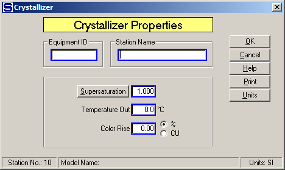
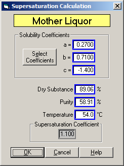

Equipment ID An equipment ID of up to 11 characters can be used to identify the station with an actual station in the process. Any combination of numbers and letters that are used in the factory/refinery to identify equipment can be entered. For example, Equipment ID = 123.456A. It is not necessary to make an entry in the Equipment ID field if the station in the model does not have a corresponding station in the factory/refinery.
Station Name A name of up to 20 characters must be entered for the station. For example, Station Name = 'B' Massecuite Mixer.
Supersaturation Enter a supersaturation coefficient for output flow leaving the crystallizer station. Click the Supersaturation button to calculate supersaturation using dry substance (%DS) and Purity of the mother liquor if the supersaturation coefficient is not known, but mother liquor values are known. Supersaturation is defined as:

Where,
 is at the same temperature
and with the same non-sucrose to water ratio as the sample being analyzed.
For example, Supersaturation = 1.15.
is at the same temperature
and with the same non-sucrose to water ratio as the sample being analyzed.
For example, Supersaturation = 1.15.
Sugars will calculate the supersaturation coefficient for the massecuite output flow by clicking the Supersaturation button if the supersaturation of the massecuite isn't known, and the values of the mother liquor percent dry substance (%DS) and purity can be measured. Enter the mother liquor parameters on the small window that appears (see below) and click on the OK button to calculate the supersaturation value and enter it into the Supersaturation field of the Crystallizer Properties window. New values for the 'a', 'b' and 'c' coefficients can be entered if they are different than the values for the flow going into the crystallizer. The initial values shown will be from the output flow leaving the crystallizer in the model. If a different temperature value is entered for the mother liquor, this value will be retained as the temperature for the massecuite leaving the crystallizer as shown on the Crystallizer Properties window. The other Mother Liquor entry values are not retained for the station.

Temperature Out Enter the temperature (°C) of the massecuite as it leaves the crystallizer station. A crystallizer will cool the massecuite; hence, the temperature of massecuite out of the crystallizer should be less than the temperature of the massecuite into the crystallizer. For example, Temperature Out = 54.0°C.
Color Rise Enter the increase in color of the massecuite as it flows through the crystallizer. The increase can be specified in percent (%), or in amount. If the amount of color rise is used, the units can be any color units (CU) that are consistent for the complete model. For example, Color Rise = 5.0 %, or Color Rise = 300 ICUMSA color units (CU).